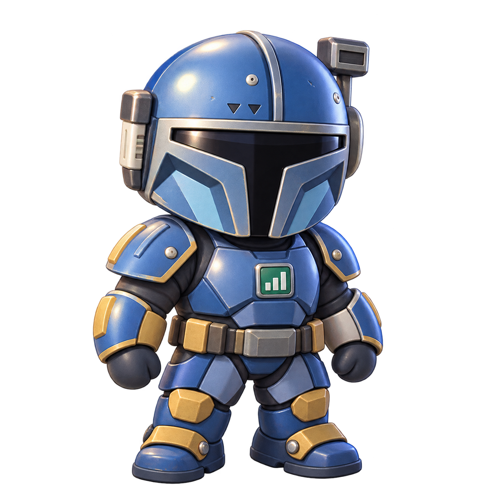
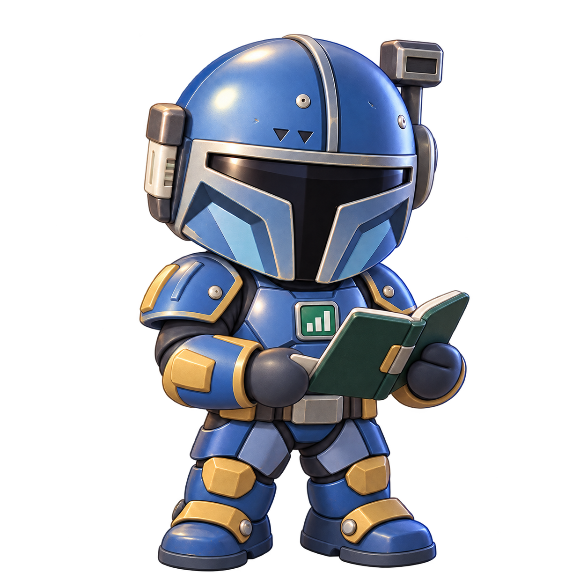
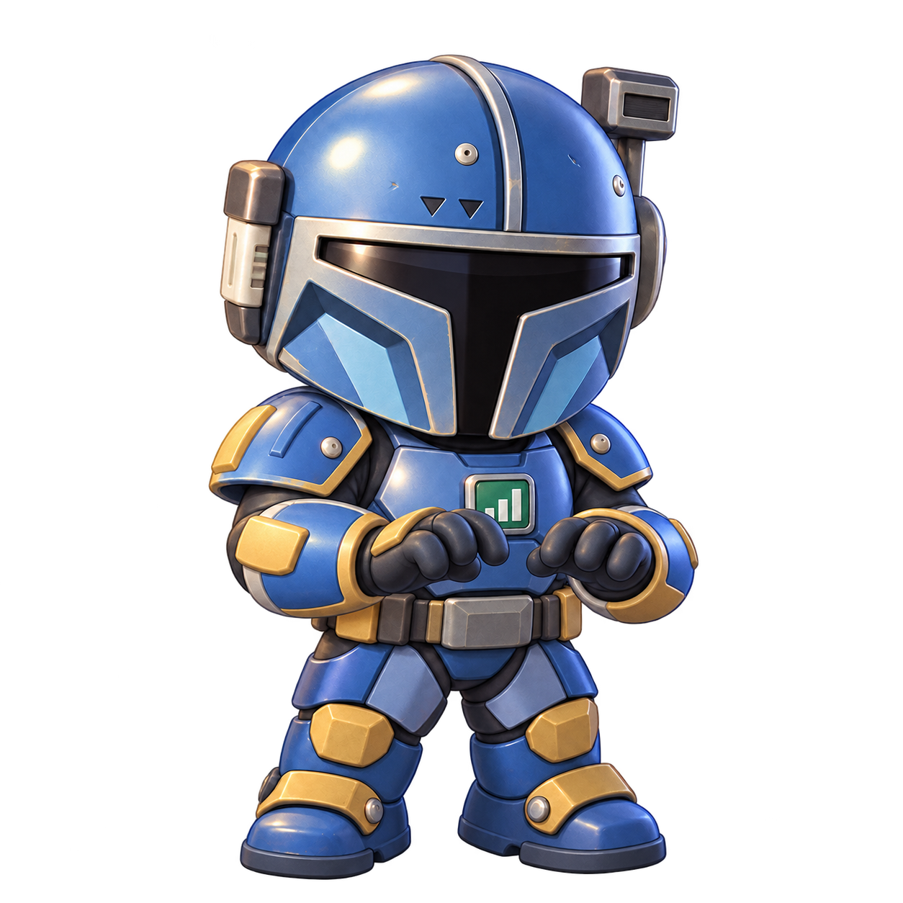
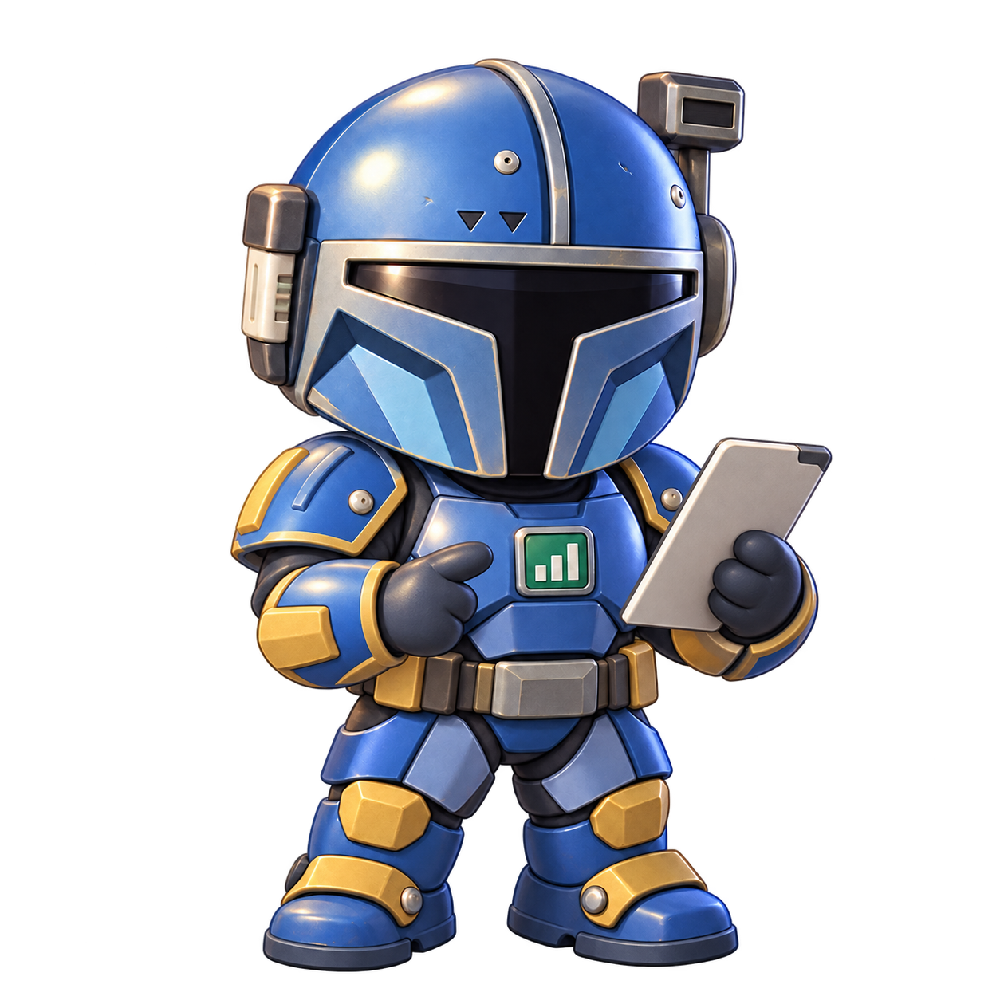
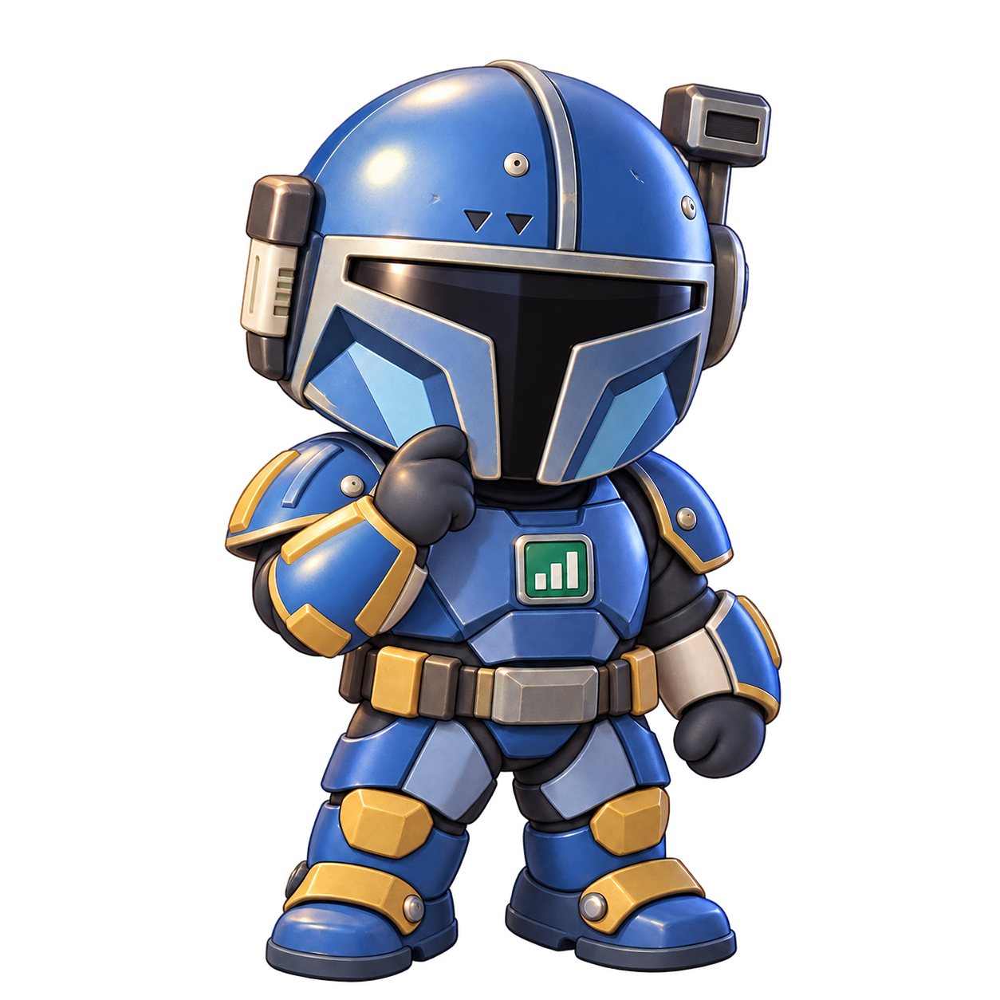

Virtual office · design review
Paz idle avatar
A transparent concept master for the portfolio analyst slot, compared against the production Rex and current portfolio avatar at matched display scale.
Light background comparison
The three artwork boxes use the same 300 × 300 display frame. The shared height and floor contact make the silhouette differences easy to inspect.



Dark background comparison
The same transparent masters on the application's dark surface, to check alpha edges, visor contrast, and color separation.
Small-size samples
The scene uses roughly 32–36 CSS px on desktop and about 40 CSS px on phones. These samples show the readable identity cues at both sizes.
Approved pose family
Each pose keeps the same helmet, armor, badge, camera, lighting, and grounded floor alignment. Runtime exports use the existing portfolio-bot asset key.



